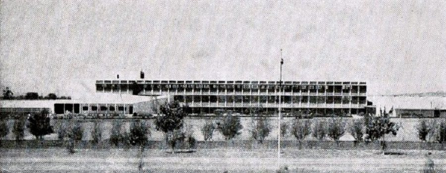
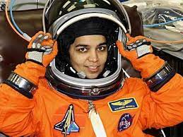

"Kalpana Chawla became the first Indian-born woman to go to space in 1997. Six years later, on February 1, 2003, Chawla died when the space shuttle Columbia broke up on re-entry into Earth's atmosphere, killing all seven astronauts on board."
Chawla's legacy has lived on, however. In particular, her talent and hard work have inspired young people in India and around Earth to consider careers in spaceflight.
Born in Karnal, India, on March 17, 1962, to parents Banarasi Lal Chawla and Sanjyothi Chawla, Kalpana Chawla was the youngest of four children.

Until she started school, Chawla hadn't been formally named. Her parents called her Montu, but Chawla picked her own name from a selection when she entered education. The name Kalpana means "idea" or "imagination." Her full name is pronounced CULL-pah-na CHAU-la, though she often went by the nickname K.C.
As a child, Chawla developed an interest in flying after first seeing a plane at around the age of three. She spent days with her father visiting her local flying club with her father and showed an interest in aviation while at school.
During her earlier education in India, Chawla attended Tagore Baal Niketan Senior Secondary School, Karnal.
Chawla obtained a degree in aeronautical engineering from Punjab Engineering College. When selecting the course, professors tried to dissuade her, as there were limited opportunities for girls in India following this career path. However, Chawla was adamant that this was the subject for her.

After completing her engineering degree in India, Chawla immigrated to the United States in the 1980s and became a naturalized citizen to continue her studies. She obtained her masters degree from the University of Texas and earned a doctorate in aerospace engineering from the University of Colorado in 1988.
Chawla began working at NASA's Ames Research Center the same year, working on powered-lift computational fluid dynamics. In particular, her work(opens in new tab) focused on understanding how air flows around an aircraft during flight and incorporating computers into the work.
In 1994, Chawla was selected as an astronaut candidate. After a year of training, she became a crew representative for the Astronaut Office EVA/Robotics and Computer Branches, where she worked with Robotic Situational Awareness Displays and tested software for the space shuttles.
Chawla felt passionately about providing science education opportunities for young girls in India, and during her time as an astronaut, NASA invited Chawla's secondary school to take part in their Summer Space Experience Program. Each year from 1998, the school sent two girls to the Foundation for International Space Education's United Space School in Houston and Chawla would invite them into her home for an Indian dinner.
Chawla's first flight came in November 1997, aboard the space shuttle Columbia on flight STS-87(opens in new tab). The shuttle made 252 orbits of the Earth in just over two weeks. Chawla was a mission specialist and prime robotic arm operator for the flight; the other astronauts on board were Kevin Kregel, Steven Linsey, Winston Scott, Takao Doi and Leonid Kadenyuk.

The shuttle carried a number of experiments, including projects studying plant reproduction in microgravity and how materials behave in space.
In addition, Chawla used the robotic arm to deploy a satellite called SPARTAN 201, which was meant to study the outer layer of the sun, called the corona. However, the satellite malfunctioned and could not control its position upon deployment, according to NASA(opens in new tab). Two other astronauts from the mission had to perform a spacewalk to recapture the satellite and the instrument never conducted any research.
After her first flight, Chawla said, "When you look at the stars and the galaxy, you feel that you are not just from any particular piece of land, but from the solar system."
In 2000, Chawla was selected for her second voyage into space, to serve as a mission specialist on STS-107. The mission was delayed several times before finally launching on Jan. 16, 2003.
During the 16-day flight, the crew completed more than 80 experiments, working a strenuous shift schedule to ensure that the research never stopped, according to NASA(opens in new tab). Among other work, the STS-107 crew tested technology that NASA wanted to recycle water on the young International Space Station. Experiments developed by elementary school students from around the world analyzed how insects and fish respond to spaceflight; another suite of experiments studied the sun.
In particular, the flight carried a large pressurized chamber called the Spacehab research module inside the shuttle's payload bay. The experiments completed in the Spacehab module focused on biological and health sciences.
Between her two missions, Chawla logged 30 days, 14 hours, and 54 minutes in space.
On the morning of Feb. 1, 2003, the space shuttle returned to Earth, intending to land at Kennedy Space Center. But as the shuttle passed through Earth's atmosphere, hot gas streamed into the shuttle's wing where a briefcase-sized piece of insulation had broken off during launch and damaged the thermal protection system, the shield that protects it from heat during re-entry.
The unstable craft rolled and bucked, pitching the astronauts about. Less than a minute passed before the ship depressurized, killing the crew. Also on board were Rick Husband, Laurel Clark, Ilan Ramon, David Brown, William McCool and Michael Anderson.
The shuttle broke up over Texas and Louisiana before plunging into the ground. The accident was the second major disaster for the space shuttle program, following the 1986 explosion of the shuttle Challenger.
Shortly after the Columbia disaster, scientists named(opens in new tab) seven asteroids after each crewmember as a "celestial memorial." To mark the first anniversary of the disaster, NASA also named seven hills(opens in new tab) on Mars for the lost crew.
The University of Texas dedicated a Kalpana Chawla memorial(opens in new tab) at the Arlington College of Engineering in 2010. At the time of its opening, the display included a flight suit, photographs, information about Chawla's life, and a flag that was flown over the Johnson Space Center during a memorial for the Columbia astronauts.
In October 2020, a commercial cargo spacecraft named after Chawla launched to the International Space Station (ISS). Northrop Grumman's Cygnus capsule was named the S.S. Kalpana Chawla, as it is the company's policy to dedicate their Cygnus capsules to someone who has played a pivotal role in human spaceflight.
"Chawla was selected in honor of her prominent place in history as the first woman of Indian descent to go to space,"
By
R Lokeswari
Gitam University